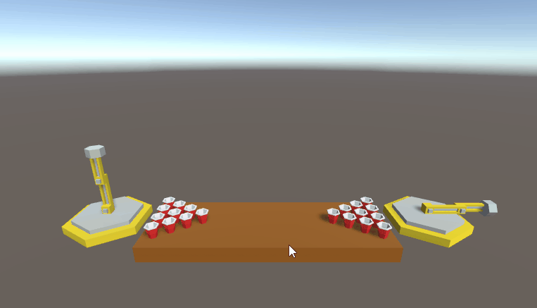

In Robot Beer Pong, teams write RISC-V machine code that controls a robot to play beer pong against other teams who did the same thing; each time your robot 'drinks', bits are randomly flipped and the robot gets more silly. Uploading your code to this site will automatically enter you into the competition. To see your code playing, go to the YouTube livestream.
Robot Beer Pong is turn based. At the beginning of your robot's turn, the ball is place on your magnet, the PC is set to zero, and your code executes until you call EBREAK. Once you call EBREAK, code execution terminates, the ball is released, and Newton takes over.
You have 5 seconds to complete a turn and the processor runs at a speedy 1kHz.
RBP uses fixed point arithmetic, rather than floating point; this allows it to implement a smaller subset of the RISC-V architecture. Every number is stored as an integer that is exactly 1/1024 of its decimal value.
In RBP, you interact with the robot solely through CSR registers. Various important values related to the robot are mapped to CSR registers. The following table displays all of these
| Address | Value |
|---|---|
| 2 | Waist Angle |
| 3 | Arm Angle |
| 4 | Hand Angle |
| 5 | Waist Angular Velocity |
| 6 | Waist Angular Velocity |
| 7 | Waist Angular Velocity |
| 8 | Waist Torque |
| 9 | Arm Torque |
| A | Hand Torque |
| B | Configuration |
All of the values are stored as radians in fixed point (see above), except for the configuration (see below). Torques are read/write; everything else is read-only, except for configuration, which is sometimes writable (see below).
The configuration is a 32-bit binary word representing the current position of all of the cups.
The lowest order bit represts whether the board is 'flipped' or not. The following images show the bit corresponding to the cup in each position; they are with a 0 and 1 low order bit respectively.
Notice therefore that 0x000026fe is the classic beer pong 10 cup configuration. The top 13 high order bits are ignored.
The configuration can always be read, but it can only be written to once per game until two cups remain, when it becomes permanantly read/write.